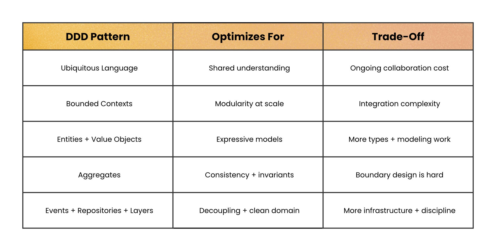
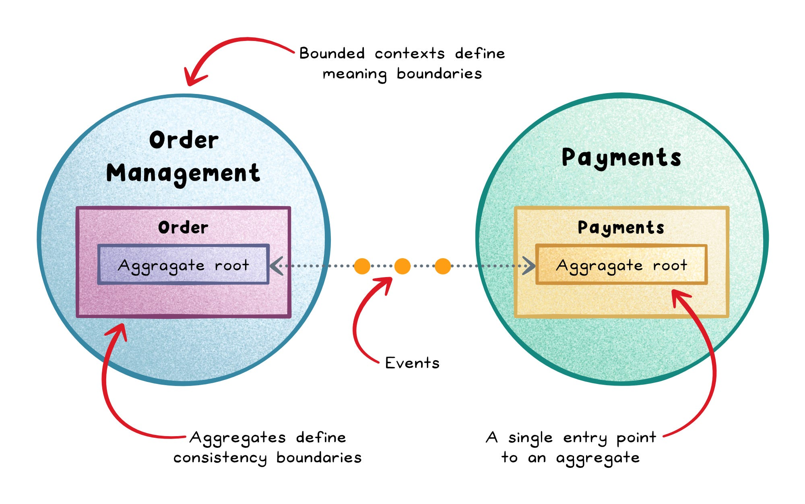

✕
| Pattern | Optimizes for | Trade-off |
|---|---|---|
| Ubiquitous Language | Shared understanding | Ongoing collaboration cost |
| Bounded Contexts | Modularity at scale | Integration complexity |
| Entities + Value Objects | Expressive models | More types + modeling work |
| Aggregates ← today | Consistency + invariants | Boundary design is hard |
| Events + Repositories ← today | Decoupling + clean domain | More infrastructure + discipline |
This deck traces back to a specific source: Eric Evans' 2003 book Domain-Driven Design — Aggregate, Entity, Value Object, Domain Event, and Repository are his tactical patterns by name.

Order lives as a plain data bag. Two different parts of the codebase mutate it directly.
// order.ts — just a data shape, no rules attached interface Order { id: string; status: "draft" | "placed"; lineItems: LineItem[]; } // checkout-controller.ts function addPromoItem(order: Order, item: LineItem) { order.lineItems.push(item); // works even if the order was already placed } // admin-panel.ts — written by a different team, six months later function forceAddItem(order: Order, item: LineItem) { order.lineItems.push(item); // same mistake, independently }
An aggregate is a cluster of domain objects treated as a single consistency boundary, controlled by one aggregate root. Outside code talks only to the root.
class Order { // Aggregate Root private lineItems: LineItem[] = []; private status = "draft"; addLineItem(item: LineItem) { if (this.status !== "draft") throw new Error("Cannot modify a placed order"); this.lineItems.push(item); } place(): OrderPlaced { if (!this.lineItems.length) throw new Error("Cannot place an empty order"); this.status = "placed"; return new OrderPlaced(this.id, this.lineItems); } }
Both controllers now call order.addLineItem() — the "already shipped" bug is no longer representable in code.

OrderService.place() looks harmless — until you see everything it directly calls.
class OrderService { async place(order: Order) { const event = order.place(); await inventoryService.reserveStock(event.lineItems); // direct call await emailService.sendConfirmation(event.orderId); // direct call await analyticsService.track("order_placed", event); // direct call await loyaltyService.addPoints(event.orderId); // added last sprint } }
OrderService again. When reserveStock was renamed during a refactor, OrderService broke — even though the change had nothing to do with placing an order.
A domain event captures something meaningful that already happened. Published outward, it becomes an integration event other contexts subscribe to independently.
class OrderPlaced { constructor(public readonly orderId: string, public readonly lineItems: LineItem[]) {} } class OrderService { async place(order: Order) { const event = order.place(); eventBus.publish(event); // ONE line — no longer knows who's listening } } eventBus.on(OrderPlaced, e => inventoryService.reserveStock(e.lineItems)); eventBus.on(OrderPlaced, e => emailService.sendConfirmation(e.orderId)); eventBus.on(OrderPlaced, e => loyaltyService.addPoints(e.orderId));
Growth path, no domain code changes: in-process EventEmitter for an MVP → Redis pub/sub once split into services → Kafka once events need replay/audit at scale. Only the adapter under eventBus changes.
async function place(orderId: string) { const rows = await db.query(`SELECT * FROM orders WHERE id = $1`, [orderId]); const order = rows[0]; if (order.status !== "draft") throw new Error("Cannot modify a placed order"); await db.query(`UPDATE orders SET status = 'placed' WHERE id = $1`, [orderId]); // business rule and SQL string, tangled in the same function }
orders. Nobody could test "can't place an empty order" without a real database.
A repository is a domain-facing interface for loading and saving aggregates — it hides persistence behind domain vocabulary.
interface OrderRepository { findById(id: string): Promise<Order | null>; save(order: Order): Promise<void>; } async function place(orderId: string, repo: OrderRepository) { const order = await repo.findById(orderId); const event = order.place(); // pure business logic, from Slide 4 await repo.save(order); eventBus.publish(event); }
Swap Postgres for DynamoDB — only the concrete PostgresOrderRepository changes. place() is now unit-testable with an in-memory fake, zero database.
OrderRepository is a small example of a bigger idea: Ports & Adapters. It's a port Domain/Application owns; PostgresOrderRepository is the adapter plugging into it from Infrastructure.
| Layer | What lives here | From this deck |
|---|---|---|
| Domain (zero deps) | Aggregates, Entities, VOs, Events | Order, OrderPlaced |
| Application | Orchestrates the domain | place(orderId, repo) |
| Infrastructure | Implements the ports | PostgresOrderRepository, eventBus |
| Interfaces | Calls in from outside | public/admin/service routes (Slide 14) |
Order and OrderPlaced have never heard of Postgres, Redis, or Express. Infrastructure and Interfaces depend on Domain — never the reverse.
Does Order Management need a physically separate database from Inventory? The rule isn't physical separation — a bounded context must be the only thing that ever writes to (and directly reads) its own data.
| Architecture | What "database per context" looks like |
|---|---|
| Microservices | Usually a genuinely separate physical database per context |
| Modular monolith | One physical instance is fine — separate schemas, zero foreign keys crossing the boundary |
// scattered across 6 files, wherever a webhook is handled function handleWebhook(payload: any) { const orderId = payload.order_ref; // legacy snake_case const amount = payload.amt_cents / 100; // legacy field, cents not dollars const currency = payload.cur; // legacy abbreviation }
amt_cents to amount_minor_units in a v2 API. Six files broke, six different ways.
// payment-gateway-acl.ts — the ONLY file that knows the vendor's field names function translateGatewayWebhook(payload: LegacyGatewayPayload): PaymentCompleted { return new PaymentCompleted(payload.order_ref, Money.fromCents(payload.amt_cents, payload.cur)); } // order-management/ProductRef.ts — Order Mgmt's OWN view of Inventory's Product, // even though Inventory is a fully-trusted in-house team interface ProductRef { sku: string; available: boolean; }
The rule of thumb reverses what beginners assume: a translated reference is the default at every boundary, in-house or not. Shared Kernel — jointly co-owning a small slice like Money — is the deliberate exception.
Business — team patterns:
Coding — explicit contracts only:
Revisit Slide 3: the bug wasn't that the admin panel was "different code" — it had its own separate door into lineItems instead of the same aggregate as everything else.
// public-api/orders-controller.ts app.post("/orders/:id/items", (req, res) => order.addLineItem(req.body.item)); // admin-api/orders-controller.ts — a DIFFERENT route, SAME aggregate method app.post("/admin/orders/:id/items", requireSupportRole, (req, res) => order.addLineItem(req.body.item) // the invariant fires here too — no bypass );
Public, Admin, and Service-to-service are three Interfaces-ring adapters (Slide 9) — all funneling into the identical Order aggregate.
Public API Admin API Service-to-service
(customer) (support) (other contexts)
│ │ │
└───────────────┼───────────────────┘
▼
┌─────────────────┐ Order.place() ┌──────────────────┐
│ Order (Aggregate │──────────────────────▶ │ OrderPlaced event │
│ Root) │ enforces invariants └──────────────────┘
└─────────────────┘ │
│ OrderRepository.save() │ published on event bus
▼ ▼
┌─────────────────┐ ┌───────────────────┐
│ Persistence │ │ Inventory context │
│ (own schema/DB) │ │ reserves stock │
└─────────────────┘ │ (a Go service) │
└───────────────────┘
│
▼
┌───────────────────┐
│ Payments context │
│ (via ACL, external │
│ gateway webhook) │
└───────────────────┘Ubiquitous Language named every box the way Northwind would. Bounded Contexts kept "Product" from fighting over meaning. Aggregates + Ports & Adapters stopped the admin-panel bug across all three doors. Events decoupled Inventory — on a different stack — from Order's internals. Repositories + schema boundaries kept SQL and cross-context joins out. The ACL kept a vendor's v2 migration to one file.